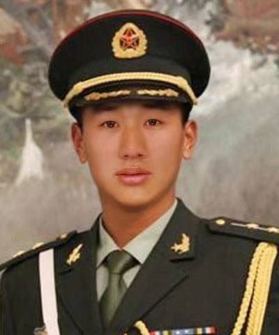
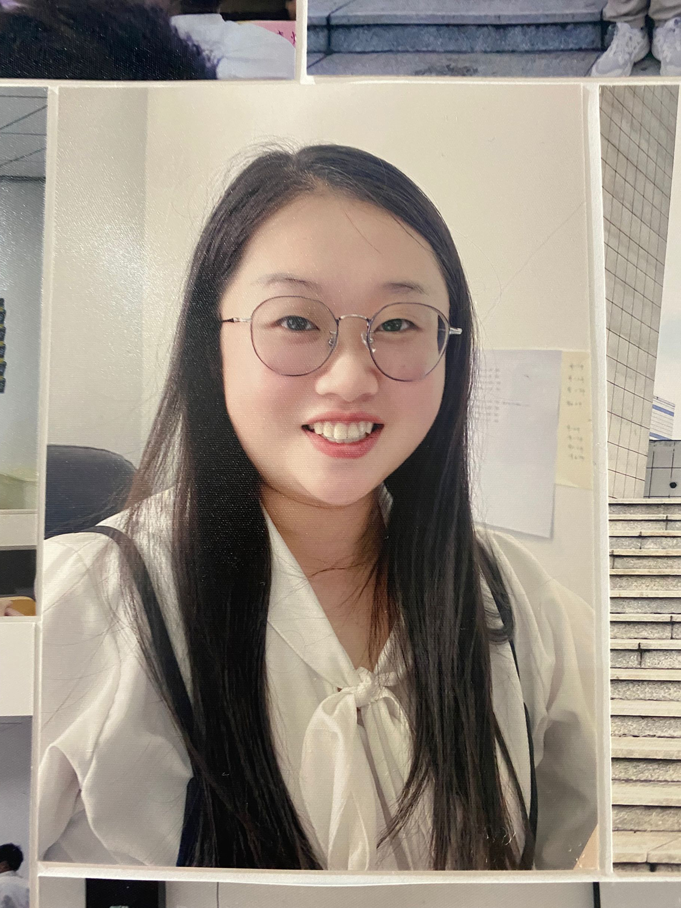

尹老师：
尹洪峰老师，他是我们的辅导员，也不 止是我们的辅导员，虽然他很忙，但是他会 抽出时间来关心我们，给我们提取建议。

张老师:
张蕊老师，我们班的班主任，非常的 可爱，她对班上的同学无微不至，也时不时 的给我们惊喜，她真的很温暖。

李老师：
李十通老师，他是我们的讲师，是我们专业课上老师， 在上课期间他会清晰的为我们讲解，在课后，我们有问题， 他都会耐心去解答，他是我们帅气的李老师。

吴璇学姐：
我们的副班导吴璇学姐，她是小巧可爱的女孩子， 她也是我们的一个带领者，带领着我们熟悉适应学 校的环境，让我们早点融入班级，适应学校。
移动互联应用技术2104班